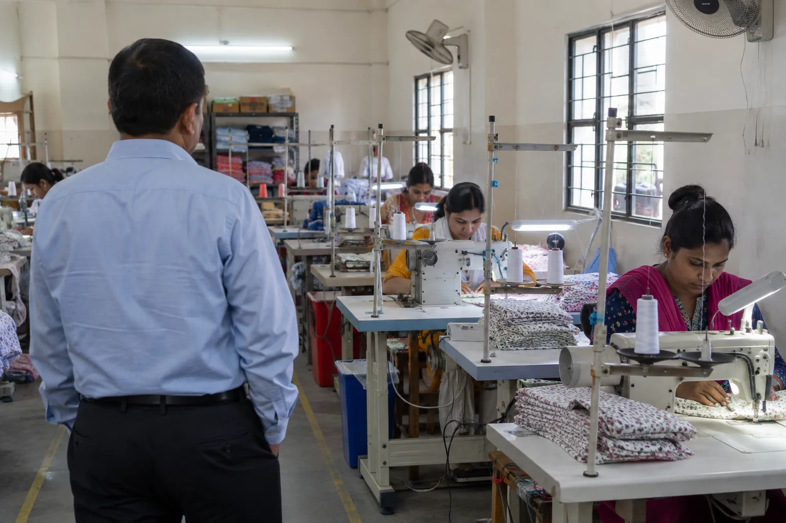
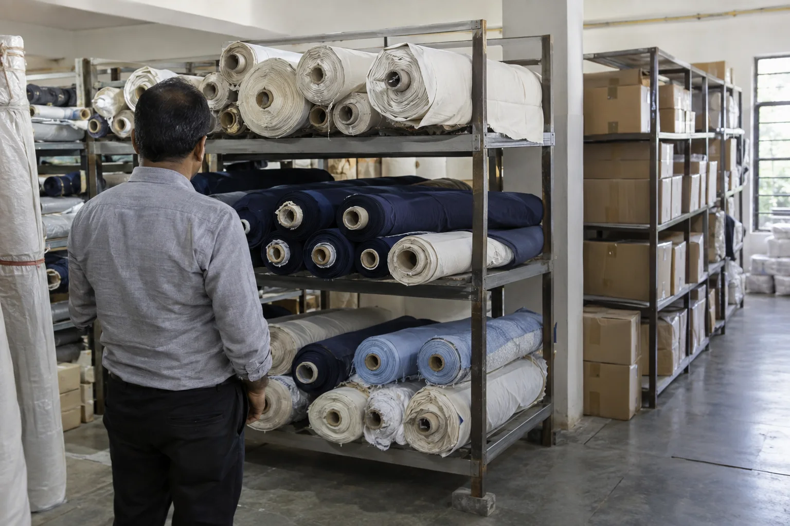
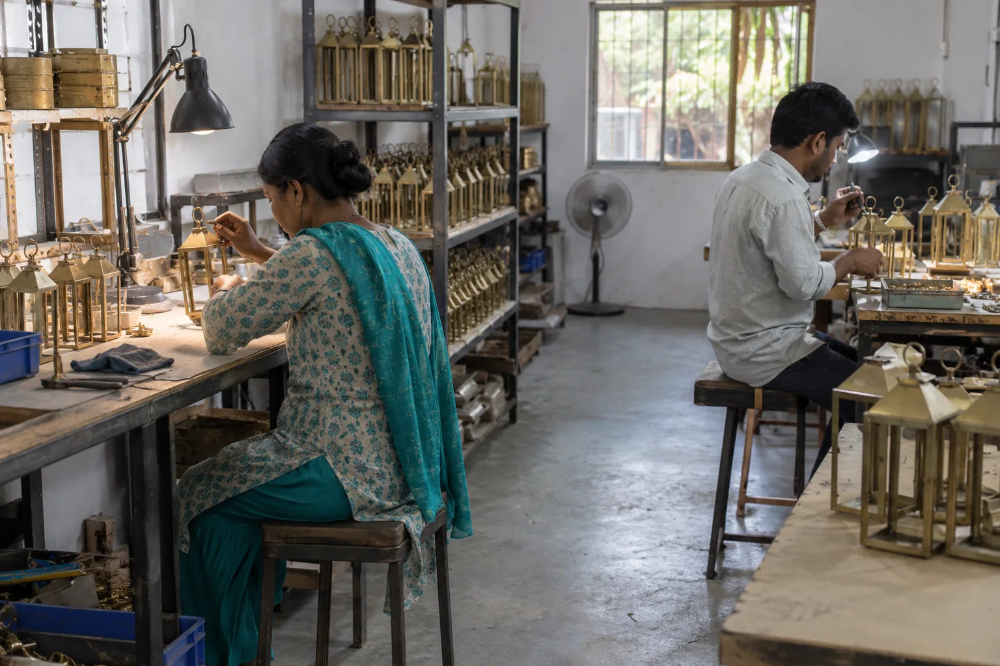

Factory audit in India for overseas buyers
Know the factory before you trust an order to it. An on-site audit helps you judge whether a potential supplier has the operation, people and quality discipline behind its promises.
Send your brief by email or WhatsApp, choose what suits your team.

Most valuable when: evaluating an unfamiliar manufacturer, qualifying a new product category, or deciding whether to scale an existing supplier. If you are still searching for a maker, start with sourcing.
What matters on site
Move beyond the supplier's presentation
An audit should answer the questions behind the purchase order: does this business exist and operate as represented, and is its current capability a credible fit for your product?
Business & premises
Observe the operating location and review available registration or business details relevant to your brief.
Capacity & process
Review machinery, workforce, workflow and production activity against the type and volume of order proposed.
Quality & conditions
Discuss how materials, in-process checks, final quality and working conditions are managed on site.
Scope note: This is a buyer-focused supplier assessment, not a legal, financial, social-compliance or certification audit. Any specialist verification needed for your procurement rules should be agreed separately.
The buyer's decision
Assess fit, not just existence
A real factory can still be the wrong factory for a particular order. A garment unit, footwear maker and metal or wood workshop need different equipment and controls. We look at the relationship between your product requirements and what can be observed at the site: relevant processes, staffing, quality checks and product experience.
Findings should help you decide whether to proceed, ask for corrective action, visit personally or seek a different supplier.
The output
Evidence you can discuss
The agreed audit output can bring together observations, supporting photographs, open questions and an overall assessment. We distinguish what was seen from what the factory stated and note information that could not be verified during the visit.
Share your supplier-selection criteria in advance so the report speaks to your actual decision.
How to arrange it
Three steps before a purchase commitment
Send the factory details
Tell us the legal or trading name, location, contact person and product you plan to source.
Agree the questions
We define the visit scope, access, documentation, product-specific capability points and timing.
Review the gaps
Use the findings to qualify the supplier and clarify any points before placing or scaling an order.
The operating reality
Follow the product through the factory, not just the meeting room
The audit should connect what management describes with what can be observed across production, material handling, quality checkpoints, storage and dispatch. That matters whether the supplier makes garments, pet clothing, footwear, leather goods or manufactured metal and wood products.


Questions worth answering
Capability is product-specific
Can the factory make this item consistently?
Relevant equipment is only one part of capability. Skills, process control, maintenance, material handling, subcontracting and quality ownership all affect whether an approved sample can become a repeatable production order.
Can the buyer verify important claims?
Documents and statements should be considered alongside observable operations. When a claim, process or record cannot be verified during the agreed visit, the limitation should remain visible rather than being converted into an assumption.

Set the audit questions first
Turn your supplier concern into observable checks
“Audit the factory” is too broad to guide a purchasing decision. A buyer considering cotton garments may need to understand cutting, sewing, finishing and needle control. A buyer of metal-and-wood products may care more about fabrication, finishing, assembly, subcontracting and packing protection.
A focused brief should identify:
- the exact product and expected order volume;
- processes or materials that must be handled in-house;
- claims you want the visit to verify where possible;
- known risks from samples, quotations or prior orders; and
- the decision you will make after the audit.
We then agree what can reasonably be observed during the visit and which specialist, legal, financial or accredited assessments sit outside the scope.
Evaluating a factory before ordering?
Email or WhatsApp the supplier name, city, product, expected volume and your three biggest concerns for a focused scope discussion.
More product-specific examples
Observe storage and assembly, not just finished samples
Supplier capability is better understood by following materials and work through the operation. A focused visit can connect storage conditions and visible assembly practices to the product and order being considered, within the agreed audit scope.


Common questions
Audit versus inspection
Will this tell me whether my finished order passes?
No. A factory audit assesses the supplier and its processes. A product inspection checks an actual order or production lot against product requirements.
Can you visit more than one shortlisted factory?
Yes, subject to location, access and scheduling. Comparing the same agreed criteria across factories can make the decision more useful.
Does an audit guarantee future performance?
No. It is a point-in-time assessment. Repeat inspections or supplier monitoring can help when an order moves into production.
Related services
Before the order, verify the operation
Share the supplier city, product and the decision you need to make.
Email is useful for specifications and attachments; WhatsApp is convenient for quick questions and photos. If you do not receive an email reply, please follow up by WhatsApp or phone.